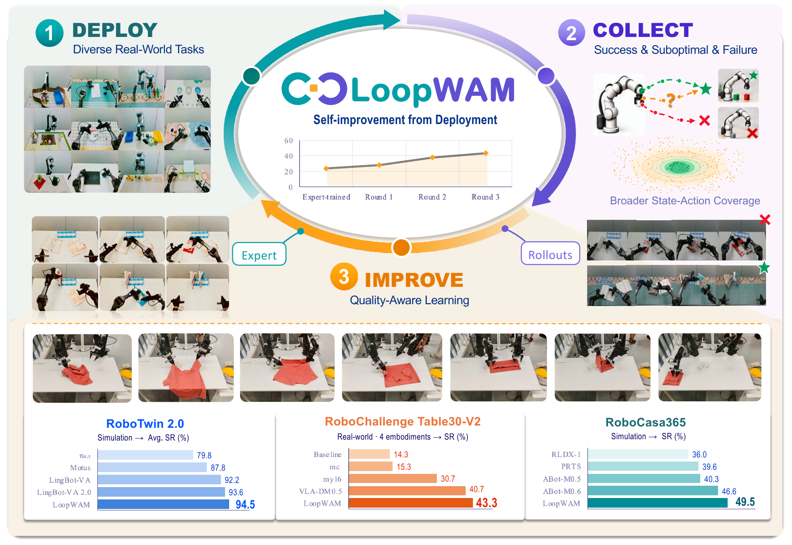
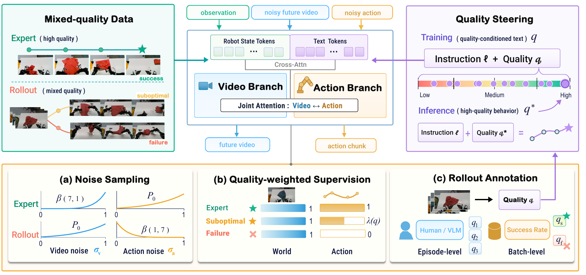

Imitating everything
can reinforce mistakes.
Treating every recorded action as a target also teaches the policy undesirable behavior.
ICLR 2027 · UNDER REVIEW
Every rollout is experience.
Learn the consequences of every action. Imitate according to quality.
Best overall results among the methods compared in the submitted paper.
01 / MOTIVATION
Expert demonstrations show a robot how to succeed. Deployment reveals what happens when it does not. Successful, suboptimal, and failed rollouts all contain evidence about physical interactions—but their actions are not equally useful to imitate.
Treating every recorded action as a target also teaches the policy undesirable behavior.
Even a failed rollout reveals how actions change the world and why an interaction goes wrong.
Keep world-model supervision across the full quality spectrum, and weight action imitation by trajectory quality.

02 / METHOD
LoopWAM jointly denoises future video and actions. Bidirectional attention connects the two streams throughout generation, allowing learned action consequences to inform control.

Expert data train joint generation. Low-noise rollout actions help the world model learn their observed consequences.
All trajectories retain full video supervision. Action weights increase with quality; failed rollouts receive zero direct action-imitation loss.
Quality conditions both streams during training. At deployment, an expert-quality target steers the policy toward desirable behavior.
03 / BENCHMARK RESULTS
LoopWAM achieves the best overall performance among the compared methods on all three benchmarks. RoboTwin 2.0 and RoboCasa365 use mixed expert–rollout training, without additional embodied-data pretraining.
30 real-world tasks · 4 robot embodiments
| Method | ALOHA SR (%) | DOS-W1 SR (%) | ARX5 SR (%) | UR5 SR (%) | Overall score | Overall SR (%) |
|---|---|---|---|---|---|---|
| LoopWAM | 26.00 | 42.00 | 55.71 | 76.67 | 56.80 | 43.33 |
| VLA-DM0.5 | 18.00 | 42.00 | 58.57 | 70.00 | 54.42 | 40.67 |
| my16 | 13.00 | 27.00 | 54.29 | 46.67 | 41.27 | 30.67 |
| LoopWAM (expert-trained) | 8.00 | 38.00 | 24.29 | 26.67 | 36.10 | 23.67 |
| JV0 | 5.00 | 16.00 | 20.00 | 43.33 | 27.58 | 16.00 |
| mc | 7.00 | 0.00 | 47.14 | 20.00 | 23.63 | 15.33 |
| MagicBot | 0.00 | 5.00 | 32.86 | 53.33 | 20.82 | 14.67 |
| holobrain | 3.00 | 6.00 | 30.00 | 43.33 | 27.93 | 14.33 |
| Baseline Model | 6.00 | 6.00 | 32.86 | 26.67 | 31.48 | 14.33 |
| test_01 | 1.00 | 3.00 | 28.57 | 43.33 | 22.73 | 12.33 |
| W0 | 2.00 | 0.00 | 30.00 | 43.33 | 21.85 | 12.00 |
| debuggers_vla | 0.00 | 2.00 | 34.29 | 23.33 | 18.72 | 11.00 |
Paper · Table 1. Overall performance uses task weights of 10 / 10 / 7 / 3 across ALOHA, DOS-W1, ARX5, and UR5. LoopWAM trains one multi-task model per embodiment. The final model follows three deployment-and-training rounds.
50 bimanual tasks · Clean & randomized scenes
| Method | Additional embodied pretraining | Clean SR (%) | Randomized SR (%) | Average SR (%) |
|---|---|---|---|---|
| LoopWAM | No | 94.6 | 94.4 | 94.5 |
| LingBot-VA 2.0 | Yes | 93.8 | 93.4 | 93.6 |
| AHA-WAM | No | 93.4 | 92.2 | 92.8 |
| LingBot-VA | Yes | 92.9 | 91.5 | 92.2 |
| Fast-WAM | No | 91.9 | 91.8 | 91.8 |
| Motus | Yes | 88.7 | 87.0 | 87.8 |
| ABot-M0 | Yes | 81.2 | 80.4 | 80.8 |
| π₀.₅ | Yes | 82.7 | 76.8 | 79.8 |
| Motus (from Wan2.2) | No | 77.6 | 77.0 | 77.3 |
| X-VLA | Yes | 72.9 | 72.8 | 72.9 |
| π₀ | Yes | 65.9 | 58.4 | 62.2 |
Paper · Table 2. LoopWAM uses mixed expert–rollout training and a pretrained Wan2.2 video backbone, without additional embodied-data pretraining. Rollouts come from expert-trained LoopWAM, X-VLA, and π0.5; collection and evaluation use different random seeds.
50 evaluation tasks · Seen and unseen compositions
| Method | Additional embodied pretraining | Atomic Seen (%) | Composite Seen (%) | Composite Unseen (%) | Overall SR (%) |
|---|---|---|---|---|---|
| LoopWAM | No | 79.7 | 50.3 | 14.9 | 49.5 |
| ABot-M0.6 | Yes | 79.4 | 48.3 | 7.9 | 46.6 |
| ABot-M0.5 | Yes | 75.6 | 37.7 | 3.3 | 40.3 |
| PRTS | Yes | 66.3 | 30.3 | 18.8 | 39.6 |
| RLDX-1 | Yes | 67.6 | 27.9 | 8.5 | 36.0 |
| GR00T N1.5 | Yes | 50.7 | 14.8 | 2.7 | 23.9 |
| GR00T N1.6 | Yes | 51.1 | 9.4 | 1.7 | 21.9 |
| GigaWorld-Policy 0.1 | Yes | 44.4 | 11.8 | 2.9 | 20.7 |
| π₀.₅ | Yes | 39.6 | 7.1 | 1.2 | 16.9 |
| π₀ | Yes | 34.6 | 6.1 | 1.1 | 14.8 |
| Diffusion Policy | No | 15.7 | 0.2 | 1.3 | 6.1 |
Paper · Table 3. Overall success uses task weights of 18 / 16 / 16. All 16 Composite-Unseen tasks are excluded from expert and rollout training data. LoopWAM has the highest overall result among compared methods; PRTS has the highest Composite-Unseen result (18.8%).
Comparisons reproduce the submitted paper and are not a live leaderboard. “Additional embodied pretraining” refers to pretraining on embodied data before benchmark training.
04 / CLOSED-LOOP SELF-IMPROVEMENT
Starting from expert-trained policies, each round collects and scores new rollouts, then trains on expert demonstrations and accumulated deployment experience. Improvement appears in both a multi-task generalist and single-task post-training.
Multi-task generalist
23.67% → 43.33% +19.7 pp
| Training stage | Success (%) | Score |
|---|---|---|
| Expert-trained | 23.67 | 36.10 |
| Round 1 | 28.00 | 42.63 |
| Round 2 | 37.67 | 51.65 |
| Round 3 | 43.33 | 56.80 |
Paper · Figure 3 and Section 4.4
Single-task post-training
13.20% → 55.56% +42.4 pp
| Training stage | Success (%) | Score |
|---|---|---|
| Expert-trained | 13.20 | 14.44 |
| Round 1 | 32.54 | 38.89 |
| Round 2 | 55.56 | 67.78 |
Paper · Figure 3 and Section 4.4
Table30-V2: three deployment-and-training rounds. Shirt folding: two rounds after single-task post-training. Changes in success rate are reported in percentage points.
THE TAKEAWAY
LoopWAM turns mixed-quality deployment data into a source of continued policy improvement. It learns physical consequences from all rollouts, regulates which actions to imitate, and brings both signals together inside a shared world–action model.